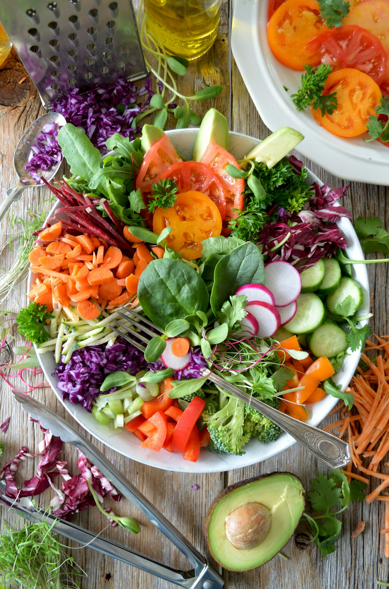

The Origins of Basil Broth Camp
Founded on Mercer Street in New York, Basil Broth Camp began with a clear mission: to restore the stockpot to its rightful place as the vibrant center of the kitchen. In modern commercial food systems, the gentle, patient simmer has been replaced by industrial pressure-cooking, chemical flavor enhancers, and artificial sodium concentrates.
We created our camp to revive the tactile, aromatic craft of whole-plant extraction. Centered around sweet basil cultivars and locally harvested alliums, our kitchens explore how subtle temperature manipulation and gentle herbal infusions yield stocks with restorative clarity and complex umami.

Our Three Founding Culinary Commitments
1. 100% Whole Botanical Sourcing
We work exclusively with certified organic family farms and regenerative forest foragers. Every leek, carrot, mushroom, and basil leaf is cultivated without synthetic pesticides, preserving pure natural soil minerals.
2. The Slow Heat Mandate
True broth cannot be rushed. We maintain our stocks at a deliberate sub-boiling simmer (85°C–92°C) for up to 14 hours in heavy copper and cast iron kettles, allowing natural collagens and vegetable pectins to dissolve into a silky, crystal-clear elixir.
3. Communal Knowledge Sharing
Culinary wisdom flourishes when shared around a common table. Through weekend camp retreats, technical journal monographs, and masterclass workshops, we empower cooks of all skill levels to master the core pillar craft of stock making.
Visit Our Urban Kitchen Studio
Address: 181 Mercer Street, New York, NY 10012, United States
Kitchen Desk: +1-888-777-5845
Email: hearth@basilbrothcamp.com